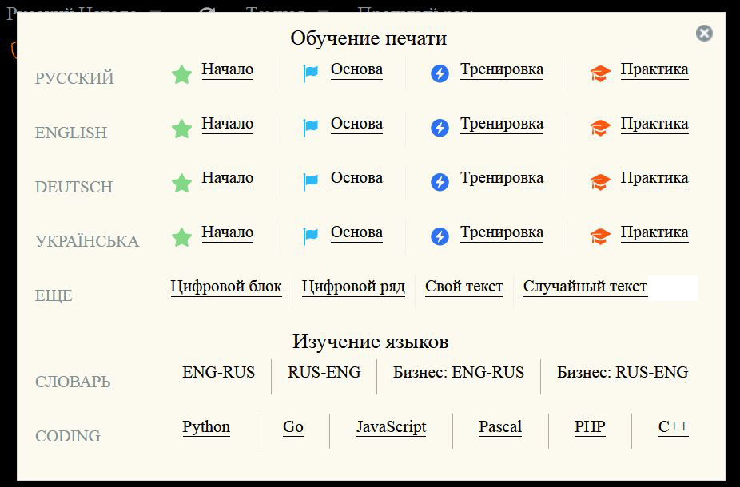

1. Клавиатура.
Необходимо выбрать клавиатуру, с которой будете проходить обучение. Желательно выбрать стандартное расположение клавиш (не под углом или еще как), чтобы сразу привыкать к наиболее распространенной раскладке «ЙЦУКЕН».

Нажатие клавиш не должно быть глубоким (ход клавиш), так как их легче нажимать и не так будут уставать пальцы. На начальном этапе обучения конструкция клавиатуры ещё не так сильно влияет на скорость набора, как впоследствии. Может иметь значение и размер клавиатуры, ведь он рассчитан на средний размер руки и среднюю длину пальцев. Если у вас небольшая рука или короткие пальцы, то вам может быть удобней пользоваться небольшими клавиатурами (ноутбучные или Wi-Fi клавиатуры). Ну, а если выбрать клавиатуру не представляется возможным (ноутбук и т.п.), то не надо этим себя отговаривать от обучения, так как, научившись быстро печатать на не удобной для вас клавиатуре, вам потом будет проще набирать текст на хорошей.
2. Правильная посадка.
Сидеть необходимо прямо, не нагибаясь и сильно не наклоняя голову. Угол сгиба коленей и локтей примерно 90 градусов, а запястья не должны провисать. Стопы ног всей своей доступной поверхностью опираются на пол. Взгляд должен быть направлен вперёд, в центр экрана монитора (если прямо глядеть на монитор, то взгляд у вас будет по верхней кромке). Расстояние от глаз до экрана монитора — от 40 до 70 см. Желательно сидеть в специальном кресле, так как не каждый стул позволяет поддерживать правильную осанку, да и кресло можно отрегулировать под рост и комплекцию человека.
3. Разминка или гимнастика для пальцев.
Всем известна со школы пальчиковая гимнастика — способ дать отдых уставшим пальцем. Со временем вы привыкаете к нагрузкам в письме и уже не так часто об этой гимнастике и вспоминаете. Так вот, на первом этапе обучения слепому методу набора текста вам также будет важна разминка или гимнастика для пальцев. Об этом очень редко пишут в инструкциях, так как сами авторы давно в этом не нуждаются, но вот только учителя обучающие играть на пианино или гитаре понимают важность этого. Разминка (гимнастика) очень важна перед любыми физическими нагрузками, так как подготавливает мышцы и связки к повышенным нагрузкам. Если вы пришли с улицы и руки замёрзли, то потрите ладони и согрейте их, промассируйте каждый палец, подвигайте ими в разные стороны, растягивая связки. Пока руки не будут согреты, не будут подготовлены к работе, то вам будет сложнее добиваться какого-то прогресса в обучении. Я рекомендую найти упражнения для гитаристов или пианистов и выполнять их хотя бы пару раз в день. На ютюбе можно найти множество примеров этих упражнений, вот одно из таких видео: https://www.youtube.com/watch?v=Ald9MNNzxI8
4. Расположение пальцев и запоминаем расположение букв.
Расположите четыре пальца левой руки над символами «ФЫВА», а правой - над символами «ОЛДЖ» (так называемая «основная позиция»). Кончики пальцев слегка касаются соответствующих клавиш. При постановке на основную позицию пальцы рук должны быть слегка согнутыми, как будто рука держит круглый предмет. Указательные пальцы слегка касаются кончиками середины клавиш «А» и «О», но не опираются на них. На клавишах «А» и «О» имеются небольшие выступы, так что Вы, даже не смотря на клавиатуру, сможете всегда установить указательные пальцы на данные клавиши. Большие пальцы рук должны быть расположены на кнопке пробела. Пальцы рук не должны быть напряжены, а поза сидящего должна быть максимально удобной.
Русскую раскладку я рекомендую запоминать как такие странные слова:
«ЙЦУКЕ» «НГШЩЗХЪ»
«ФЫВАП» «РОЛДЖЭ\»
«ЯЧСМИ» «ТЬБЮ.»
Если данные слова еще как-то можно запомнить, подобрав что-то похожее в русском, то вот для английской раскладки сложнее:
«QWERT» «YUIOP[]»
«ASDFG» «HJKL;'\»
«ZXCVB» «NM,./»
Главный смысл такого раскладывания букв в том, что мало используемые буквы (символы) были как можно дальше по краям, так как мизинцем и безымянным набирать сложнее, особенно если их надо изгибать.
В английском языке самые мало встречаемые буквы Z,Q,X, что и заметно в раскладке, а запятая более часто встречается, чем точка, вот она и ближе к центру. Другая важная причина, почему буквы располагают так, а не иначе состоит в том, что при наборе слов должно быть как можно больше чередований нажатий разными руками, разными пальцами.
Если вы слышали название раскладки как «QWERTY», то уже запомнили 6 символов из верхнего ряда. Далее «UIOP» можно запомнить как странное имя, состоящее из гласных, притом «OP» идут в алфавитном порядке. Если еще присмотреться, то ниже, по сути, идут в алфавитном порядке оставшиеся символы «HiJKL» (i - тут показан как выпавший символ, который присутствует уже вверху), а если пройтись вниз, то обнаружим продолжение, но в обратном алфавитном порядке «NM»
Начало «AS» понятно для англичан, а «DeFG» можете запомнить тоже как в алфавитном порядке, ну или зная это как немецкую аббревиатуру «DFG».
«ZX» - начало названия когда-то популярных компьютеров «ZX Spectrum», или же просто алфавитный порядок с конца «ZyX». Оставшиеся 3 символа «CVB» запомнить можно по разному, допустим так: «C» - она же и в русской раскладке расположена здесь же, так что будьте внимательны при сменах раскладки клавиатуры, когда слово начинается с этого символа; «VB» - как сокращение «Visual Basic» или «волейбол» или еще как, но мне кажется смешным выражение «ZX с Visual Basic», так что и сложности в запоминании нет.
И помните, что можно и не учить расположения букв, забыть, где они располагались, но ваша мышечная (рефлекторная) память сама нажмёт нужную букву, вы даже не будете задумываться, как не задумываетесь сейчас, как дышать. Рефлекторная память не формируется за один раз, для её формирования вы должны повторять одни и те же действия по многу раз. Увидели букву (стимул) - нажали кнопку (реакция), повторили это много-много раз и таким образом сформировали рефлекторную память. Выражение «много-много» раз не значит, что вы по многу часов сидите только над этим, но, как и при запоминании информации, полезно повторять в течение суток эту «стимул-реакцию», так и для слепого набора это делайте. Каждодневный повтор действий только лучше закрепит ваш навык, так как каждый сон для человека есть время для анализа стимул-реакций, перестроения нервной системы и всего организма под задачи лучшего выживания при данных ресурсах (хорошее питание, снабжение кислородом).
«ЙЦУКЕ» «НГШЩЗХЪ»
«ФЫВАП» «РОЛДЖЭ\»
«ЯЧСМИ» «ТЬБЮ.»
Если данные слова еще как-то можно запомнить, подобрав что-то похожее в русском, то вот для английской раскладки сложнее:
«QWERT» «YUIOP[]»
«ASDFG» «HJKL;'\»
«ZXCVB» «NM,./»
Главный смысл такого раскладывания букв в том, что мало используемые буквы (символы) были как можно дальше по краям, так как мизинцем и безымянным набирать сложнее, особенно если их надо изгибать.
В английском языке самые мало встречаемые буквы Z,Q,X, что и заметно в раскладке, а запятая более часто встречается, чем точка, вот она и ближе к центру. Другая важная причина, почему буквы располагают так, а не иначе состоит в том, что при наборе слов должно быть как можно больше чередований нажатий разными руками, разными пальцами.
Если вы слышали название раскладки как «QWERTY», то уже запомнили 6 символов из верхнего ряда. Далее «UIOP» можно запомнить как странное имя, состоящее из гласных, притом «OP» идут в алфавитном порядке. Если еще присмотреться, то ниже, по сути, идут в алфавитном порядке оставшиеся символы «HiJKL» (i - тут показан как выпавший символ, который присутствует уже вверху), а если пройтись вниз, то обнаружим продолжение, но в обратном алфавитном порядке «NM»
Начало «AS» понятно для англичан, а «DeFG» можете запомнить тоже как в алфавитном порядке, ну или зная это как немецкую аббревиатуру «DFG».
«ZX» - начало названия когда-то популярных компьютеров «ZX Spectrum», или же просто алфавитный порядок с конца «ZyX». Оставшиеся 3 символа «CVB» запомнить можно по разному, допустим так: «C» - она же и в русской раскладке расположена здесь же, так что будьте внимательны при сменах раскладки клавиатуры, когда слово начинается с этого символа; «VB» - как сокращение «Visual Basic» или «волейбол» или еще как, но мне кажется смешным выражение «ZX с Visual Basic», так что и сложности в запоминании нет.
И помните, что можно и не учить расположения букв, забыть, где они располагались, но ваша мышечная (рефлекторная) память сама нажмёт нужную букву, вы даже не будете задумываться, как не задумываетесь сейчас, как дышать. Рефлекторная память не формируется за один раз, для её формирования вы должны повторять одни и те же действия по многу раз. Увидели букву (стимул) - нажали кнопку (реакция), повторили это много-много раз и таким образом сформировали рефлекторную память. Выражение «много-много» раз не значит, что вы по многу часов сидите только над этим, но, как и при запоминании информации, полезно повторять в течение суток эту «стимул-реакцию», так и для слепого набора это делайте. Каждодневный повтор действий только лучше закрепит ваш навык, так как каждый сон для человека есть время для анализа стимул-реакций, перестроения нервной системы и всего организма под задачи лучшего выживания при данных ресурсах (хорошее питание, снабжение кислородом).
5. Работа с интерфейсом.
При первом запуске в браузере интерфейс скрывает клавиатуру и отключены некоторые полезные возможности. Чтобы узнать пояснение каждого элемента, то достаточно на компьютере подвести курсор указателя мыши на этот элемент и подождать (на рисунке показан пример «Показать клавиатуру»).
Для начала включите все доступные элементы-кнопки (если вид с крестиком, то отключает). Кнопки позволяют включить: звук при ошибке, автокоррекцию ввода, показать клавиатуру, раскрасить зонами под каждый палец, показать руки с обозначением каким пальцем нажимаем. Кнопка с вопросом позволяет открыть эту справку. Выпадающий список «Повторить» задает возможность выбора повторения ввода строки. Выпадающий список «йцукен» задает возможность выбор раскладки клавиатуры, которой вы пользуетесь.
Вверху есть выпадающий список с выбором языка, кнопка «Начать заново», выбор цветовой темы (светлая, темная), скорость прошлого выполнения на этом языке. Ниже показан процент ошибок (прошлая строка, всего), скорость в знаках в минуту (прошлая, всего и в кол. слов). Если надо концентрироваться только на вводе, а избыточный интерфейс мешает, то кнопка «ESC» скроет лишний интерфейс (может нажиматься с помощью кнопки «Esc» клавиатуры).
При выборе языка при начале обучения вам надо продвигаться от начал к основам и далее тренировка, практика. Если вы подведете курсор, то вам покажут подсказку, что в началах надо добиться скорости 60, основы - 110, тренировка до 200, а на практике и выше (для справки: 100 букв пишет школьник, 150 букв пишет взрослый при составлении полицейских отчетов, 350 знаков возможно достигнуть при стенографии, а хороша скорость набора считается уже от 200 - всё равно быстрее корявого письма).

При наборе иностранного языка есть возможность озвучить иностранное слово с помощью нажатия клавиши «Tab» (в браузере Google и, конечно, если есть доступ к интернету). Есть возможность задать свой текст, притом он запоминается в вашем конкретном браузере и в следующий раз будет загружен. Если вы запустите сайт из другого браузера (с другого компьютера), то вашей сохраненной информации там не будет.
Случайных текст есть фразы из старое версии стамины, так что местами можно сказать, что они для взрослых, так что об этом и стоит напоминание [16+].
Изучение языков методом набора слов состоит из 2 словарей: простой отсортированный по популярности (около 3000 слов) и бизнес (около 12000). Выбор слов для бизнес-словаря совсем случайный, а вот для отсортированного с большей вероятностью встречи популярного слова. В случае если вы наберете 10 и более ошибок в знании слов, то вам эти слова и будут показывать.
Если выбрать неверный вариант, то ошибочным считается как предложенный к выбору, так и неверно выбранный вами. Вам будет необходимо набрать три раза предложенный к выбору, а ниже будет показ строки, из-за которой вы ошиблись.
Выбор из раздела кодинга просто предложит набирать примеры из этих языков.
6. Советы по обучению.
1. Исследуйте все возможные доступные вам источники по обучению. Выбор и альтернатива всегда должна быть, так как однообразие просто может надоесть. Если что-то не знаете, то в поиске браузера вбейте «википедия ВАШЕ_СЛОВО» или «викисловарь ВАШЕ_СЛОВО». Пример по клавиатурным тренажерам.
2. Настройтесь к обучению. Подготовьтесь как мысленно, так и с помощью каких-то упражнений (настрой, психотренинг, разминка и т.д.). Для долговременных занятий составьте себе план изучения и придерживайтесь его независимо от достигнутых показателей.
3. От простого к сложному. Нельзя обучаться сразу множеству дел, даже если предмет один, то его разбивают на части и изучают в начале понятные вещи или те, что получаются (понятны и легки вам). Так как всё сложное состоит из простых частей, то, только поняв простые части можно понять и весь сложный предмет. Для нашего обучение это значит, что порядок обучения таков: учимся нажимать буквы, сочетания букв, слоги слов, слова, предложения.
4. Многократные повторения. Только многократное повторение как мысленное, так и в действии позволяют достигнуть успехов в обучении. Любые знания мы в начале видим (представляем или реально видим). Пробуя применить новые знания, мы создаем свой опыт, который впоследствии вспоминаем в голове не только зрительно, но и другими чувствами, что только способствует усвоению этого знания, навыка. При обучении методу слепого набора мы вначале изучаем расположение клавиш (смотрим), потом пробуем выставить руки в основную позицию «ФЫВА-ОЛДЖ» (практика), смотрим на рисунок клавиатуры, на свои руки, смотрим, как мы нажимаем клавишу(-ши) и запоминаем зрительно и движение и ощущение, затем повторяем многократно, ну а после пробуем набирать не глядя (по воспоминаниям).
5. До автоматизма. Любые знания нужно доводить до автоматизма, до рефлекса, до мгновенной ассоциации. Вам крикнули «Змея!» и вы сразу отбежите и начнете искать источник опасности... или вам показали «2+2» и у вас в голове сразу всплывает «=4» без всякого думанья! Вы должны увидеть действие на рисунке или у кого-то подсмотреть, мысленно повторить, повторить без реализации, допустим, передвигаем палец на нужную кнопку, не нажимая её, и так много раз тренируем это движение. Тренировка с нажатием (реализация) проводится уже только потом - это длительный, но совершенный метод, применяемый у военных (уж они и «обезьяну» научат). Одна проблема у такого обучения в том, что не научит размышлять (почему это, а не то? почему так, а не по другому? почему здесь, а не там? почему сейчас, а не когда-то? а из чего состоит? - всё это требует времени и даже при наличии его не все поймут, а для выживания может быть важно уметь быстро нажать клавишу). И так: НЕ ДУМАТЬ! Ваши пальцы потренировались нажимать, теперь просто посмотрите на нужную букву или задайте себе цель набрать её и всё... специально не двигаем палец и даже может, не думаем где там и что, ждем, пока руки сами среагируют и нажмут, может очень медленно, но именно сами, а ВЫ ДОЛЖНЫ ОТДЫХАТЬ, как сейчас отдыхаете от того, что вам не надо контролировать как вы дышите.
6. Отдыхайте. Если ваши руки устали, то сделайте перерыв или упражнения для сброса напряжения рук, так как работа в одной и той позиции очень утомительна и может даже приводить к профессиональным болезням. Занимайте до тех пор, пока не чувствуете уже усталость от тренировок. Чрезмерная усталость может сказаться на ваших результатах обучения, вы только зря будете нервничать и скорее всего, появиться желание бросить обучение. Занимайте после отдыха, допустим, после сна, если выспались и чувствуете прилив сил.
7. Не спешите. Наверное, у вас есть свой жизненный опыт, когда спешка не приводила к хорошему, так и тут, не гонитесь сразу за скоростью, а пытайтесь её плавно подымать. Особенно это актуально, если вы будете растягивать свои пальцы, а этот процесс может затянуться и на месяцы.
8. Придерживайтесь методики, инструкции или плана обучения. Методики и планы пишутся с учетом опыта преподавателя, но надо понимать для кого, для каких условий и для достижения чего писался этот план. Не так давно были еще пишущие машинки, так вот с тех пор во многих устаревших инструкциях до сих пор есть рекомендации буквально бить по клавишам, хотя для нынешних клавиатур это не надо, а для очень продвинутых факт нажатия фиксируется вообще на половине нажатия, так что можно реализовать эффект скольжения, когда нажав на половину «Т» вы тут же скользите этим пальцем и нажимаете «Ь» (на начальном этапе не рекомендую, а далее ваш мозг сам вычислит, что это будет оптимальней для быстроты).
Из важного:
- приучитесь нажимать клавиши только тем пальцем, который для них предназначен;
- всегда возвращайте пальцы в исходную позицию «ФЫВА-ОЛДЖ» (когда это не так, я описал выше на примере «ть»);
- вы должны довести набор до автоматизма, когда само набирается (на начальном этапе надо представлять, даже можно подглядывать, потренировать движение и потом нажимать);
- клавишу пробела, а также клавишу «Shift» нажимай рукой свободной от ввода текущего символа (пробел нажимают большим пальцем, а «Shift» мизинцем);
- нажимайте клавиши с одинаковым ритмом (в последствии, заметите, что разные группы символов вы всё равно набираете с разной скорость, просто от того, что они сложнее или больше расстояние приходится пройти пальцам);
- для достижения больших скоростей надо уменьшить лишние движения пальцев, а для этого их надо держать на клавишах, а не над ними, если даже и приподымаете, то скользите как бы по клавиатуре. Так же поможет способ перекатывания, когда вам, допустим, надо нажать «ТО», то выставьте палец между «Т» и «О» и нажмите клавишу «Т», и при отпускании её (еще пока палец не оторвался), перекатитесь (проскользните) на клавишу «О». Такой способ вполне выполним на средних по качеству клавиатурах. Ну, а ускоренный способ нажатия двух клавиш двумя руками и состоит в том, что как только начали нажимать первую клавишу одной рукой, уже другая рука с малым запаздыванием тоже начала нажимать.
Из важного:
- приучитесь нажимать клавиши только тем пальцем, который для них предназначен;
- всегда возвращайте пальцы в исходную позицию «ФЫВА-ОЛДЖ» (когда это не так, я описал выше на примере «ть»);
- вы должны довести набор до автоматизма, когда само набирается (на начальном этапе надо представлять, даже можно подглядывать, потренировать движение и потом нажимать);
- клавишу пробела, а также клавишу «Shift» нажимай рукой свободной от ввода текущего символа (пробел нажимают большим пальцем, а «Shift» мизинцем);
- нажимайте клавиши с одинаковым ритмом (в последствии, заметите, что разные группы символов вы всё равно набираете с разной скорость, просто от того, что они сложнее или больше расстояние приходится пройти пальцам);
- для достижения больших скоростей надо уменьшить лишние движения пальцев, а для этого их надо держать на клавишах, а не над ними, если даже и приподымаете, то скользите как бы по клавиатуре. Так же поможет способ перекатывания, когда вам, допустим, надо нажать «ТО», то выставьте палец между «Т» и «О» и нажмите клавишу «Т», и при отпускании её (еще пока палец не оторвался), перекатитесь (проскользните) на клавишу «О». Такой способ вполне выполним на средних по качеству клавиатурах. Ну, а ускоренный способ нажатия двух клавиш двумя руками и состоит в том, что как только начали нажимать первую клавишу одной рукой, уже другая рука с малым запаздыванием тоже начала нажимать.
7. О приложении.
Данное приложение разработано KAIU на основе кода https://github.com/ibnteo/klavarog_delta, для возможного внедрения на сайте https://typerun.top, так как были замечены мелкие упущения:
- звук не работал;
- убрали подчерк позиций установки пальцев;
- цифровой блок позиция минус мизинцем должно быть;
- в выпадающих списках не отображается закрытие окна;
- если указан знак ¶, то не должно разрешать ввод пробелом (но и в оригинале это так);
- раскрашивание цифрового блока нет.
Изменения на 04.09.2021 г.:
- попытка сделать под малые разрешения смартфонов (один из приоритетов этой переделки);
- без куков, все чтобы работало локально, а значит, запоминает все в браузере и даже свой текст;
- запоминает скорость для прошлой игры в каждом языке, чтобы сравнить можно было;
- 2 темы оформления (светлая и темная) и изменение в дизайне;
- фокус (скрытие) работает по ESC, а по TAB озвучивание ин. слов гуглом;
- клавиатура сверху (проще смотреть, по ESC показ\прячет без перематывания в мал. разрешениях);
- возможность задать повтор набранной строки;
- для русского языка набор из своей методики (все языки в одном файле "dict.js");
- английский с транскрипцией (выбор из top-словаря с большей вероятностью частых слов);
- случайный текст только локально из фраз стамины (старой, возможно поэтому [16+] поставил);
- реализована справка.
- звук не работал;
- убрали подчерк позиций установки пальцев;
- цифровой блок позиция минус мизинцем должно быть;
- в выпадающих списках не отображается закрытие окна;
- если указан знак ¶, то не должно разрешать ввод пробелом (но и в оригинале это так);
- раскрашивание цифрового блока нет.
Изменения на 04.09.2021 г.:
- попытка сделать под малые разрешения смартфонов (один из приоритетов этой переделки);
- без куков, все чтобы работало локально, а значит, запоминает все в браузере и даже свой текст;
- запоминает скорость для прошлой игры в каждом языке, чтобы сравнить можно было;
- 2 темы оформления (светлая и темная) и изменение в дизайне;
- фокус (скрытие) работает по ESC, а по TAB озвучивание ин. слов гуглом;
- клавиатура сверху (проще смотреть, по ESC показ\прячет без перематывания в мал. разрешениях);
- возможность задать повтор набранной строки;
- для русского языка набор из своей методики (все языки в одном файле "dict.js");
- английский с транскрипцией (выбор из top-словаря с большей вероятностью частых слов);
- случайный текст только локально из фраз стамины (старой, возможно поэтому [16+] поставил);
- реализована справка.